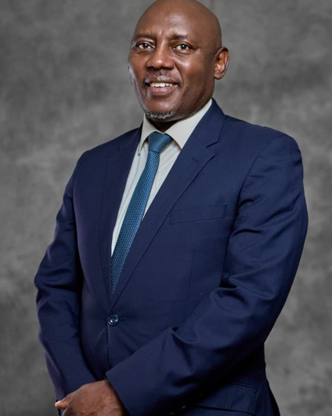
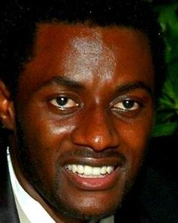
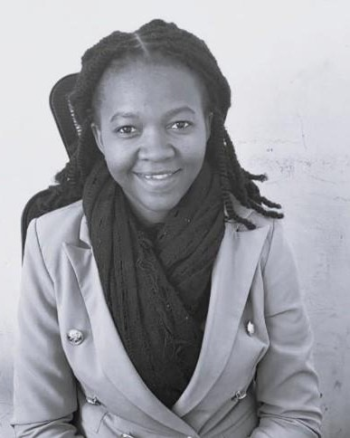
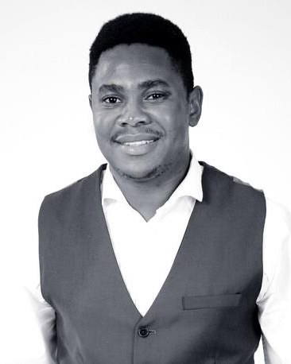
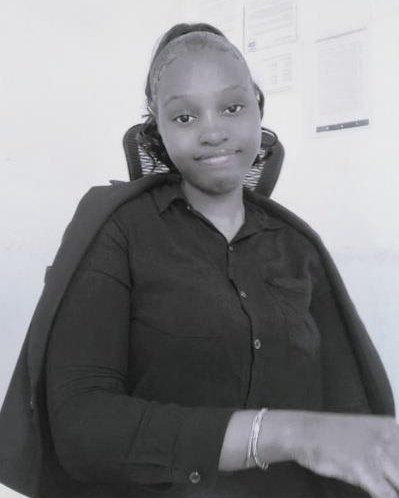

Home / Our Team
MAOS is led by Independent Consulting Actuary David T. Mureriwa, with a board and consulting team spanning actuarial science, finance and risk — and partner actuaries across the region.

David holds a First-Class Honours degree in Mathematics from the University of Zimbabwe and is a Fellow of both the Institute and Faculty of Actuaries (UK) and the Actuarial Society of South Africa. With over 30 years in actuarial consulting across the SADC region — Zimbabwe, Namibia and South Africa — he is a past President of the Actuarial Society of Zimbabwe, the IFoA's Education Advisor for Zimbabwe, a former IPEC board member, a councillor at Bindura University of Science Education and a part-time lecturer at the University of Zimbabwe. He is Consulting Actuary to life offices, general insurers and medical aid funds in Zimbabwe, and Statutory Actuary to pension funds across Africa.
An associate of CIMA with a BSc in Mathematics, Dorothy brings over 20 years of financial experience across roles as an employee and on various boards of directors — experience that enabled her to build a financial services business that has run successfully for the past five years. In her spare time she mentors and works to empower girls marginalised by society.
Dr Rundora is a senior Mathematics lecturer at the University of Limpopo (Turfloop campus), having lectured at the University of Zimbabwe, Zimbabwe Open University, Vaal University of Technology and the University of Venda, and tutored for UNISA. He holds BSc Honours and MSc degrees in Mathematics from the University of Zimbabwe and a Doctorate in Theoretical Fluid Mechanics from Cape Peninsula University of Technology.

Our partner in South Africa, with 14 years' experience in pensions and marketing. Tatenda is Managing Director of One Pangaea Financial, an actuarial consulting firm he has helped build into a trusted provider in the South African market. A highly effective project manager with strong analytics, he has assisted in product development for healthcare and life insurance providers, and works with MAOS on the checking of pension and life valuation reports.

Lynette holds a First-Class BSc Honours degree in Applied Mathematics from the National University of Science and Technology (NUST) and has over five years' working experience. She works closely with both the Independent Consulting Actuary and the Senior Consultant, and is studying towards her actuarial examinations.

Tatenda holds an Honours degree in Actuarial Science from the University of Zimbabwe and is studying towards his actuarial examinations.

Panashe holds an Honours degree in Applied Mathematics from Chinhoyi University of Technology and is studying towards her actuarial examinations.
Abigail holds an Honours degree in Risk Management and Insurance from the National University of Science and Technology and is studying towards her professional examinations.
Taurai looks after finance and administration, keeping every engagement running on time. Reach her on taurai@maos.co.za.